Overview
Project overview
Examples is one of the most important features which was introduced in Postman. I was responsible for driving the feature starting from the research phase. Because this was a new abstraction, the research phase was very important as we there were a lot of unknowns that needed to be defined. Additionally, we had to deprecate an older feature and transition to this new one. This was particularly challenging for me because changing something which millions of people are already using requires careful design decisions.
Responsibilities
My role
As the only designer working on this feature, my responsibilities included:
- Driving the feature starting from the research phase
- Understanding the underlying need of the users
- Learning about API development process and how does this need fit in there
- Writing the design brief and defining what will 'Examples' mean in Postman
- Wireframing: Understanding the Postman interface and creating wireframes to identify the best real estate to introduce this feature
- Creating high-fidelity mocks and prototypes for the final solution
- Working closely with engineers to ensure high-quality implementation
- Writing documentation and blog post. Created illustrations (in the blog post) to make the new abstraction - and transition from the old feature - understandable to users.
The need
Why do we need 'Examples'?
The ability to save responses has been available in Postman for a long time. This feature was called saved responses. However, our users wanted to edit these responses before saving them, and also to add new responses.
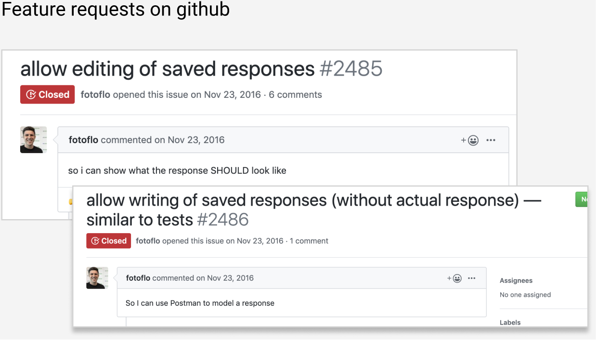Defining the unknowns
Asking the right questions
Because this was a new abstraction, the research phase was very important as we there were a lot of unknowns that needed to be defined. Since we were in the process of defining the abstraction itself, it was important to be crystal clear about the needs. I created a google sheet document and started documenting the basic questions.
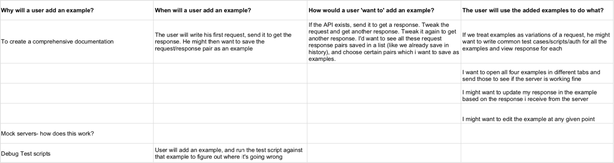 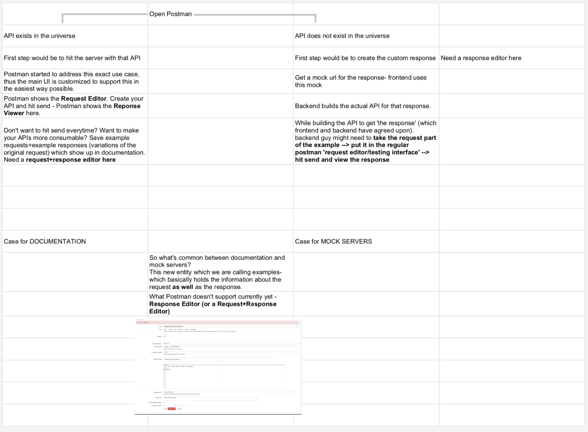{kind=link}
{kind=link}
This exercise uncovered the core abstraction that needed to be defined. We concluded that what Postman doesn't support yet is a response Editor (or a Request + Response Editor). Thus, the next step was to start giving a shape to this new experience.
Design decisions
Designing the request + response editor
We knew that once we roll this feature out, only a small number of people will be using this feature in the beginning. To avoid disrupting existing workflows, we did not want this feature to take up a lot of real estate in the main Postman interface or clutter the UI. One benefit of having so many users (both within and outside the company) was that we could get a lot of data on how people are using examples (different people could have various different workflows) from user testing. This would help us make more informed design decisions in the future based on real user data.
Here are a few snapshots of the google sheets document that I had created which highlights my thought process and how I went about fleshing out the feature. This underscores the importance of asking questions that make the solution either obvious or close to obvious.
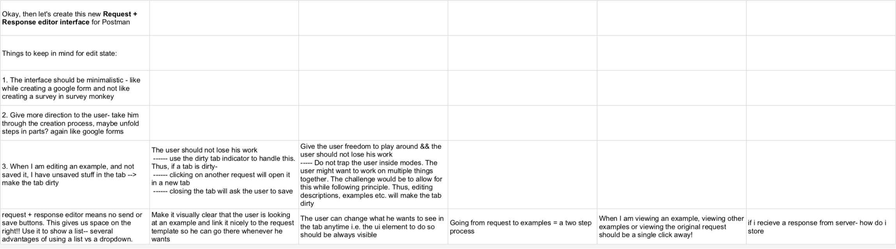 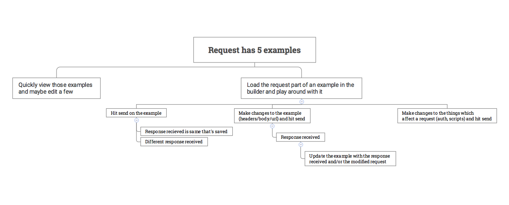 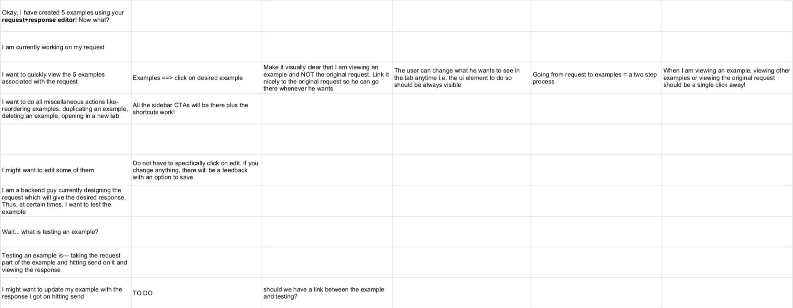 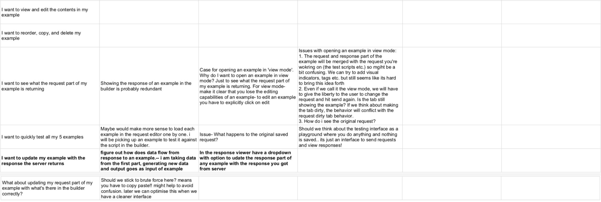{kind=link}
{kind=link}
{kind=link}
{kind=link}
User flow
Defining the user flow
I started creating user flows on sketch. After a lot of iterations, we decided on one flow that worked.
 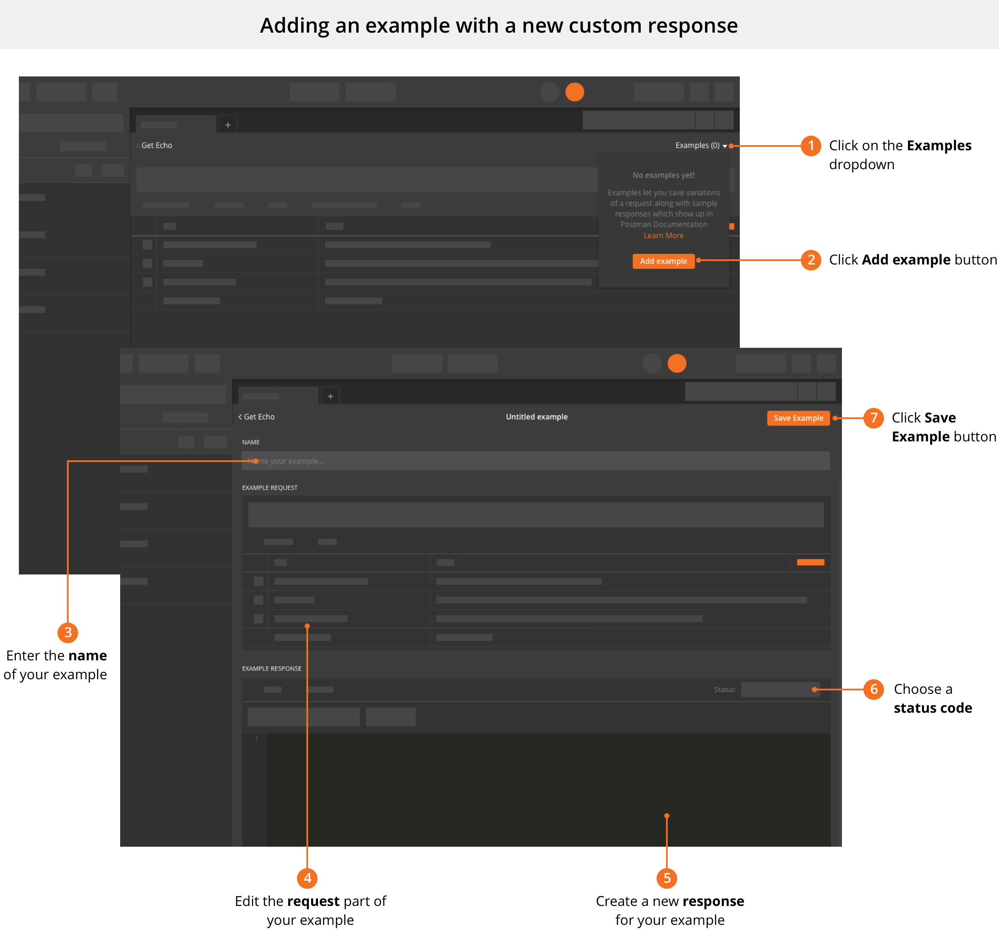
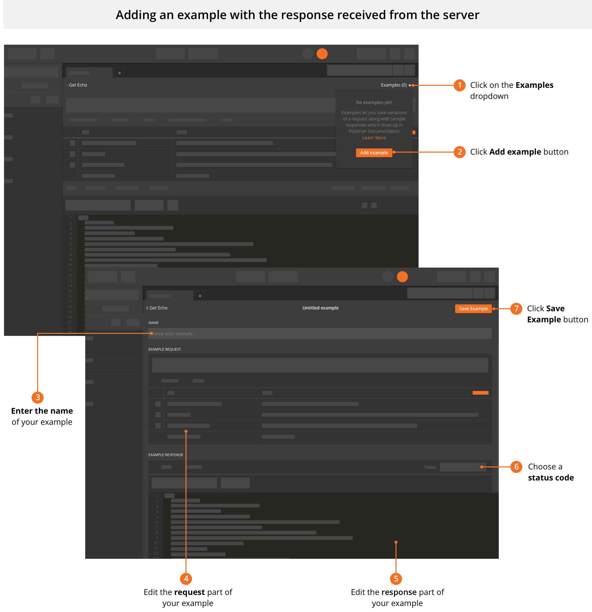
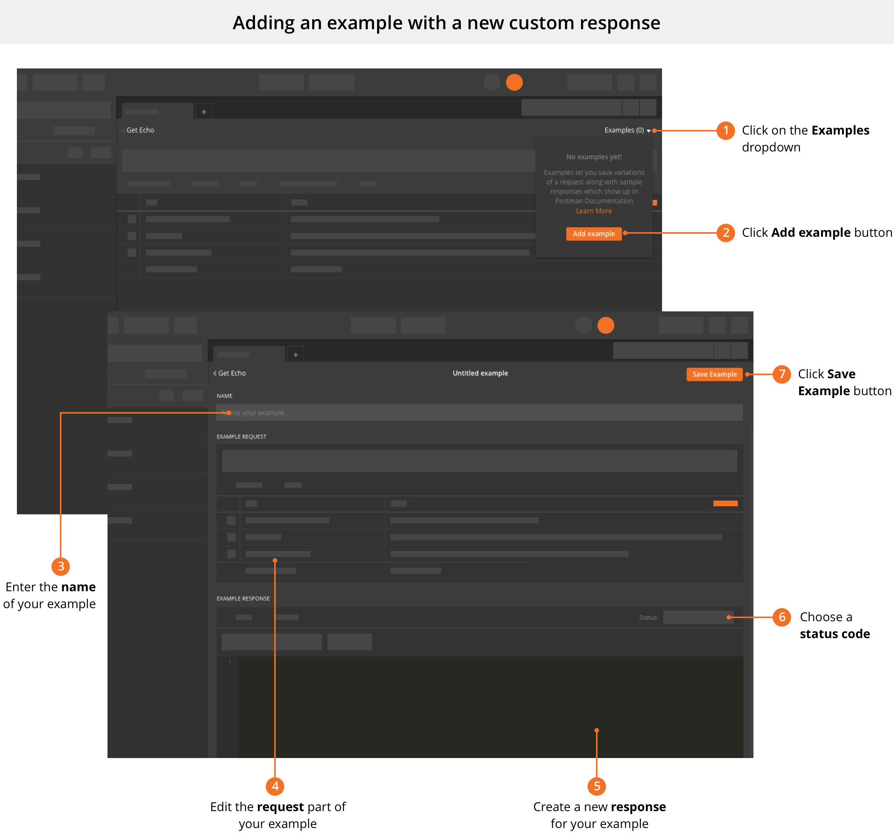
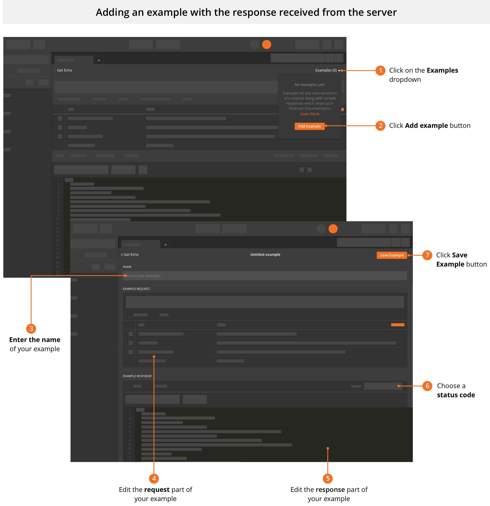
{kind=link}
{kind=link}
Core learning
Biggest learning from this project
In this project, we were essentially making the 'Save response' feature more powerful and renaming it to 'Examples'. Not only this, we were changing the CRUD flow for 'Save response'. As humans, we have resistance to change in the beginning - 'Save response' was a widely used feature and the experience for working with it had become a part of the muscle memory of our users. Thus, we had to be careful in positioning the new 'Examples' feature in our documentation. Instead of saying 'We're changing the saved response feature', we positioned it like this 'We're making the Save response feature more powerful! Save responses, like before, but now you can edit them whenever you want' which would elicit a more positive emotional response. I realised how curical marketing is in defining the user experience.
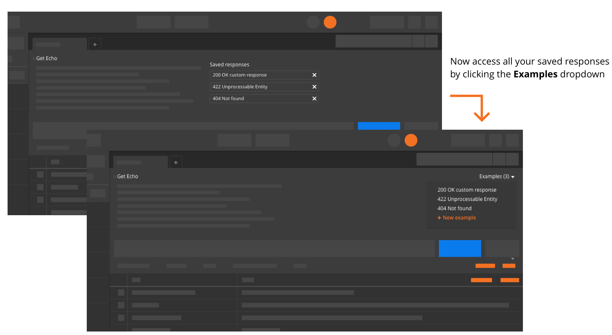{kind=link}